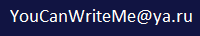

Sergey Sapunov
Contacts
- 

Personality
In addition to programming, I am interested in robotics. I want to create a fully automated modern ecological self-stated city. In this city people won't need to work for money, but for current over-the-world goals. They will live in peace and will have all they need. I like ideas of resource oriented economy. I think that nowadays there are many people with the same thoughts.
Skills
- Comp langs
- Turbo-assembler (self eduction, last time ~
- Turbo-prolog (university program)
- Turbo-pascal (university program)
- Borland Delphi (university program)
- Borland C++ Builder 6.0 (productive)
- C# (productive)
- Java (in progress)
- CLI automation (cmd, ps)
- SOLID, KISS, DRY, YAGNI
- Programming patterns (in progress)
Code samples
String idToShortURL(int n) {
char[] map = "abcdefghijklmnopqrstuvwxyzABCDEFGHIJKLMNOPQRSTUVWXYZ0123456789".toCharArray();
if (n == 0) {
return "a";
}
StringBuilder shortUrl = new StringBuilder();
while (n > 0) {
shortUrl.append(map[n % 62]);
n = n / 62;
}
return shortUrl.reverse().toString();
}
Work Experience (all in Krasnoyarsk and Krasnoyarsk region)
- 2000-2003: Registration, analyze and processing of blood components (Interbase (Firebird), Borland C++ Builder)
- 2004-2009: Product for delivery service (C#, Access DB, 1S two-sided data exchange, DIY CI/CD system, DIY messaging binary protocol, GPS coordinates processing. My responsability was the multithreading server)
- 2010-2018: NDA
- 2019-2020: IK Sibintek, Ltd (C#, Oracle)
Education
- Bachelor of Maths (applied mathematics and informatics), Krasnoyarsk State University (1996-2000)
- Stepic Certs
Languages
- Russian (native)
- English (B1)
- German (A1)